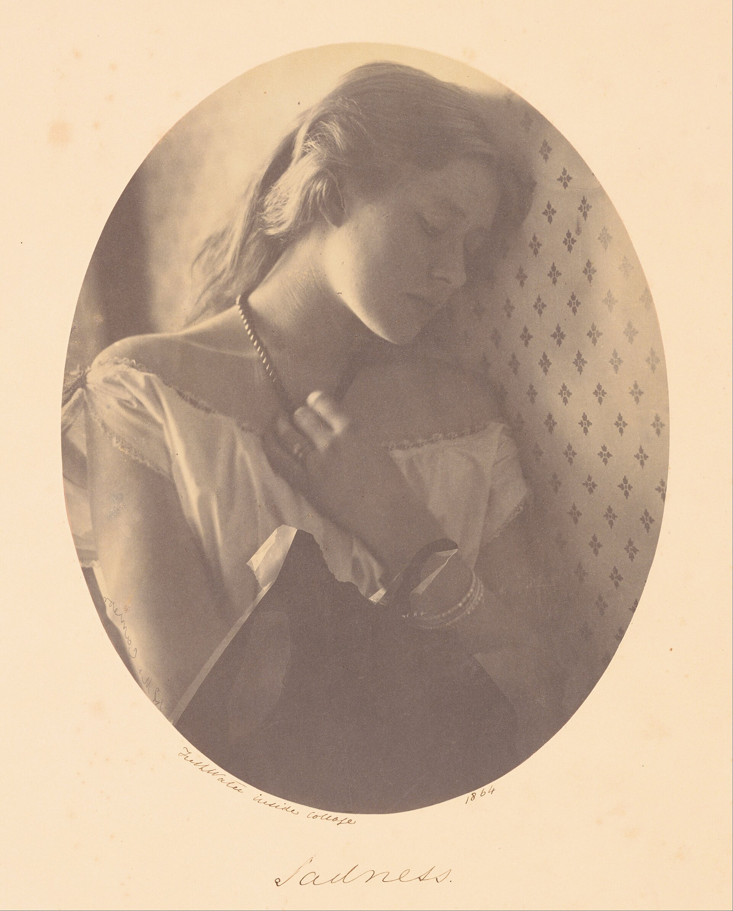

10분
도입
오래 남은 사진 한 장을 떠올리고 장면·감정·빈자리·변화를 말한다.

PHOTO HUMANITIES
우리는 왜 어떤 장면을 남기는가. 사진을 과거의 단순한 복사본이 아니라 현재의 해석, 관계, 권력이 만나는 기억의 장치로 읽는다.
설명 85분, 참여 활동 25분, 휴식 10분으로 구성한다. 이론은 정답이 아니라 사진에 던질 질문을 늘리기 위해 사용한다.
오래 남은 사진 한 장을 떠올리고 장면·감정·빈자리·변화를 말한다.
현실, 시간, 비자발적 기억, 푼크툼, 복제를 중심으로 사진을 읽는다.
가족 앨범, 포스트메모리, 기록의 부재, 캡션, 집단 기억, 아카이브를 다룬다.
설명이 바뀌면 의미도 크게 달라질 사진 한 장을 메모한다.
보는 방식, 촬영 관계, 고통의 이미지, 감시와 초상의 권력을 살핀다.
스마트폰 갤러리, 알고리즘의 추천, 생성 이미지의 진실성을 논의한다.
사진을 다섯 번 읽고, 같은 사진에 서로 다른 캡션을 붙여 비교한다.
개인·관계·사회·책임의 질문으로 오늘의 사진 습관을 다시 본다.
사진은 과거를 보존하는가, 아니면 현재의 우리가 과거를 다시 만드는가?
사진은 현실의 일부를 고정하지만, 관객은 그 장면에 시간과 감정, 개인적 경험을 다시 보탠다.
동굴의 그림자처럼 사진도 세계 전체가 아니라 프레임과 장치가 선택한 평면이다.
질문: 사진 밖에는 무엇이 있는가?우리는 시간을 잘린 점이 아니라 앞선 순간이 현재에 스며드는 흐름으로 경험한다.
질문: 멈춘 장면의 전과 후는 무엇인가?빛, 색, 표정은 의도적으로 찾지 않았던 기억과 감정을 몸에서 먼저 깨운다.
질문: 이 사진은 어떤 감각을 되살리는가?사회적으로 배우며 이해하는 관심과 개인의 기억을 찌르는 예상 밖의 세부를 구분한다.
질문: 내 시선은 어디에서 멈추는가?복제는 접근을 넓히는 동시에 이미지가 놓였던 장소, 권위, 맥락을 바꾼다.
질문: 어디서 보느냐가 의미를 어떻게 바꾸는가?가족사진과 공적 아카이브는 과거를 남기면서 동시에 누가 ‘우리’에 포함되는지 정한다.
카메라는 기억을 남기는 도구이면서 사람을 분류하고 감시하며 특정한 모습으로 고정하는 장치이기도 하다.
우리는 순수한 눈으로만 보지 않는다. 성별·계급·인종·광고·미술의 관습이 무엇을 정상적이고 아름답게 볼지 가르친다.
촬영자는 장면을 선택하고 보여 줄 권한을 가진다. 좋은 목적도 촬영되는 사람의 권리를 자동으로 대신하지 못한다.
강한 이미지는 공감을 일으키지만 반복 노출과 맥락 부족은 사람을 하나의 고통으로 고정할 수 있다.
보일 가능성만으로도 사람은 행동을 조정한다. 사진과 영상의 힘은 장치보다 그것을 운영하는 제도와 규칙에서 커진다.
사진이 많아진 시대에는 무엇을 남겼는지보다 무엇이 다시 검색되고 추천되는지가 기억을 좌우한다.
수천 장의 사진은 날짜·장소·얼굴 검색을 통해서만 다시 만나는 데이터가 된다. 서비스가 고른 과거가 현재의 감정을 바꾼다.
핵심: 기억의 입구가 앨범의 선택에서 검색과 추천으로 이동했다.편리한 회상 기능은 피하고 싶은 장면도 되돌린다. 기억을 추천하는 기술에는 인물과 기간을 제외하고 숨길 권리도 필요하다.
핵심: 기억할 권리와 함께 기억을 거절할 권리가 필요하다.사진 같은 외형만으로 사건의 흔적을 판단하기 어려워졌다. 출처, 유통 경로, 생략된 맥락, 편집·합성·생성의 흔적을 확인한다.
핵심: 한눈에 판별하기보다 검증 절차를 습관화한다.감상에서 멈추지 않고 장면, 선택, 감정, 맥락, 책임의 순서로 사진을 읽는다.
사진 안에서 실제로 확인할 수 있는 것은 무엇인가?
촬영자는 무엇을 넣고 프레임 밖에 두었는가?
내 시선이 오래 머문 곳과 그 이유는 무엇인가?
날짜·장소·인물·캡션 중 어떤 정보가 필요한가?
이 사진을 공유하면 누구에게 어떤 영향이 생기는가?
기술적 완성도를 평가하기보다 사진을 읽는 질문의 깊이와 문장이 이미지를 바꾸는 힘을 확인한다.
마무리
자주 보는 사진이 삶의 어떤 장면을 대표하는가?
앨범과 갤러리에서 사라진 사람과 시간은 무엇인가?
공통 이미지가 누구의 경험을 대표하고 무엇을 가리는가?
앞으로 남길 사진에서 누구의 권리와 이야기를 생각할 것인가?
기억을 보존하는 기술보다 기억을 책임 있게 해석하는 태도가 중요하다.